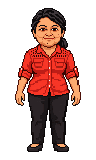

LA CAMANCHACA0 / 2100 m
MARCELO● ● ●
DISTANCIA DE LA NIEBLA

COTÉ VIENE EN CAMINO↻
GIRA EL CELULAR
La persecución se juega en horizontal.
Tu carrera queda en pausa.

COTÉ VIENE EN CAMINOLa persecución se juega en horizontal.
Tu carrera queda en pausa.